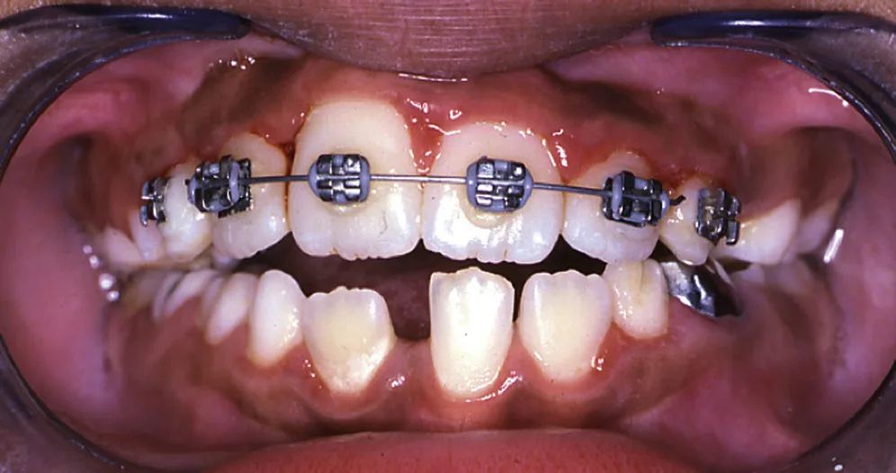

نسخه استخراجشده؛ ترجمه یا تأیید علمی انجام نشده است. وضعیت: captured
برخلاف دندان شیری، دندان دائمی آولسه باید ریایمپلنت شود — و پیشآگهی به دو چیز بستگی دارد:
۱. زمان خارج از دهان — بهویژه مدت خشک ماندن. سلولهای لیگامان پس از حدود ۳۰ تا ۶۰ دقیقه خشکی، بقای اندکی دارند.
۲. محیط نگهداری — از بهترین به بدترین: محیطهای ویژهی نگهداری دندان، شیر، بزاق یا سرم فیزیولوژی، و خشک، که بدترین است.
بهترین اقدام همان لحظه: جاگذاری فوری در محل حادثه. اگر ممکن نیست، دندان را از تاج بگیر — نه از ریشه — و در شیر بگذار.
ریشه را نتراش و نساب. فقط با شستوشوی ملایم سرم، آلودگی سطحی برداشته میشود — هر دستکاری، سلولهای باقیماندهی لیگامان را از بین میبرد.
اسپلینت انعطافپذیر و کوتاهمدت — حدود ۲ هفته. اسپلینت سفت و طولانی، خطر انکیلوز را بالا میبرد؛ حرکت خفیف به ترمیم لیگامان کمک میکند.
در دندان با آپکس بسته: پالپ زنده نمیماند — درمان ریشه باید ظرف حدود ۲ هفته شروع شود.
در دندان با آپکس باز: امکان بازگشت خونرسانی وجود دارد؛ ابتدا پیگیری میکنیم و فقط در صورت نشانهی نکروز وارد کانال میشویم.

نوع سؤال: ساخت کلمه · 3 خانه
حروف منبع: ک · ش · خ